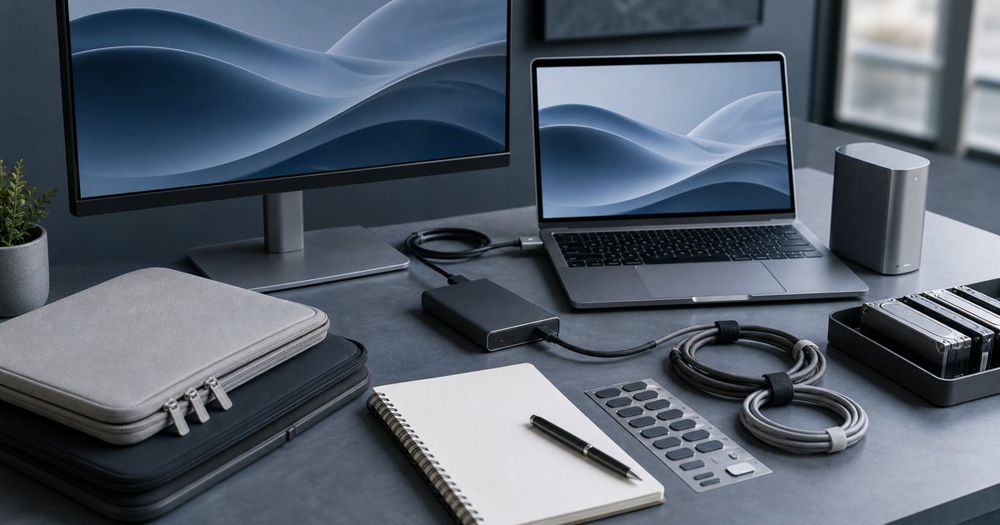

Elite Fashion｜AI 工作流需要什麼筆電：規格、保固、外接螢幕與資料備份的判斷
AI 工作流不只看筆電規格。從處理器、記憶體、保固、外接螢幕到資料備份，整理更穩定的設備採購順序。

先界定 AI 工作流，不要一開始就追最高規格
AI 工作流不是單一任務。真正需要先整理的不是商品名稱，而是你每天會在哪一個動作卡住：開會、比對資料、拍攝、簡報、移動，或收納。把卡住的位置說清楚，設備選擇才不會變成看到規格就心動。
華克電腦、凱銓科技、REAICE、聯威電腦、日本橋 3C 與 EZstick 可以放在這個情境裡比較，但角色要分清楚。編輯部會先看它們各自負責的任務：主機、螢幕、充電、聲音、拍攝、保護或收納，而不是把所有 3C 周邊混成一張清單。
把工作拆成文字、資料、影像、會議與輸出。常見錯誤是看到高階規格就下單，卻沒有確認自己的瓶頸；在台灣常見的小宅書桌、共享辦公室、咖啡店與客戶會議場景裡，雲端工具和本機高負載工作，需要的設備條件並不相同，這些細節往往比買到更高一階規格更影響使用感。
- 先確認每天使用頻率，再決定預算順序。
- 先排除會造成麻煩的動線，再補功能型配件。
規格先看處理器、記憶體、儲存，再看外觀
筆電外觀重要，但多工穩定更早影響工作。真正需要先整理的不是商品名稱，而是你每天會在哪一個動作卡住：開會、比對資料、拍攝、簡報、移動，或收納。把卡住的位置說清楚，設備選擇才不會變成看到規格就心動。
華克電腦和凱銓科技可放在主機採購主線 可以放在這個情境裡比較，但角色要分清楚。編輯部會先看它們各自負責的任務：主機、螢幕、充電、聲音、拍攝、保護或收納，而不是把所有 3C 周邊混成一張清單。
先看處理器、記憶體、儲存和散熱，再看外型。常見錯誤是把遊戲規格直接等同於工作效率；在台灣常見的小宅書桌、共享辦公室、咖啡店與客戶會議場景裡，小團隊和自由工作者更需要知道設備能否支撐日常交付，這些細節往往比買到更高一階規格更影響使用感。
- 先確認每天使用頻率，再決定預算順序。
- 先排除會造成麻煩的動線，再補功能型配件。
保固與維修，比短期規格更影響工作穩定
主力機故障會直接影響工作交付。真正需要先整理的不是商品名稱，而是你每天會在哪一個動作卡住：開會、比對資料、拍攝、簡報、移動，或收納。把卡住的位置說清楚，設備選擇才不會變成看到規格就心動。
華克電腦、凱銓科技、聯威電腦與日本橋 3C 都應回到商品頁確認服務條件 可以放在這個情境裡比較，但角色要分清楚。編輯部會先看它們各自負責的任務：主機、螢幕、充電、聲音、拍攝、保護或收納，而不是把所有 3C 周邊混成一張清單。
高價設備要把保固、發票、維修和退換規則列入比較。常見錯誤是只看價格或單一規格，忽略售後資訊；在台灣常見的小宅書桌、共享辦公室、咖啡店與客戶會議場景裡，長期使用的主機和短期備用機，採購邏輯應該不同，這些細節往往比買到更高一階規格更影響使用感。
- 先確認每天使用頻率，再決定預算順序。
- 先排除會造成麻煩的動線，再補功能型配件。
外接螢幕會影響 AI 工具的實際使用感
很多 AI 工作卡住的是視窗管理，不是算力。真正需要先整理的不是商品名稱，而是你每天會在哪一個動作卡住：開會、比對資料、拍攝、簡報、移動，或收納。把卡住的位置說清楚，設備選擇才不會變成看到規格就心動。
REAICE 可放在外接螢幕與 3C 周邊的延伸配置 可以放在這個情境裡比較，但角色要分清楚。編輯部會先看它們各自負責的任務：主機、螢幕、充電、聲音、拍攝、保護或收納，而不是把所有 3C 周邊混成一張清單。
讓資料、輸出內容和通訊視窗有不同區域。常見錯誤是把所有視窗塞在筆電螢幕裡，再怪工具不好用；在台灣常見的小宅書桌、共享辦公室、咖啡店與客戶會議場景裡，固定工作角落的螢幕舒適度，會影響一天能維持多久，這些細節往往比買到更高一階規格更影響使用感。
- 先確認每天使用頻率，再決定預算順序。
- 先排除會造成麻煩的動線，再補功能型配件。
資料備份不能等到出事才開始
AI 工作會產生大量版本、素材和客戶檔案。真正需要先整理的不是商品名稱，而是你每天會在哪一個動作卡住：開會、比對資料、拍攝、簡報、移動，或收納。把卡住的位置說清楚，設備選擇才不會變成看到規格就心動。
EZstick、日本橋 3C、聯威電腦與 Momax 可補保護、儲存和線材 可以放在這個情境裡比較，但角色要分清楚。編輯部會先看它們各自負責的任務：主機、螢幕、充電、聲音、拍攝、保護或收納，而不是把所有 3C 周邊混成一張清單。
把備份分成本機、外接儲存和雲端至少兩層。常見錯誤是所有資料只放在一台筆電裡；在台灣常見的小宅書桌、共享辦公室、咖啡店與客戶會議場景裡，備份流程越簡單，越可能真的每週執行，這些細節往往比買到更高一階規格更影響使用感。
- 先確認每天使用頻率，再決定預算順序。
- 先排除會造成麻煩的動線，再補功能型配件。
採購順序：主機、螢幕、備份，再到保護與周邊
重新整理 AI 工作設備時，順序比衝動採購更重要。真正需要先整理的不是商品名稱，而是你每天會在哪一個動作卡住：開會、比對資料、拍攝、簡報、移動，或收納。把卡住的位置說清楚，設備選擇才不會變成看到規格就心動。
華克電腦、凱銓科技和 REAICE 可作為第一輪判斷 可以放在這個情境裡比較，但角色要分清楚。編輯部會先看它們各自負責的任務：主機、螢幕、充電、聲音、拍攝、保護或收納，而不是把所有 3C 周邊混成一張清單。
主機決定底線，螢幕決定舒適，備份決定風險承受度。常見錯誤是一開始就買漂亮周邊，卻沒有解決當機和丟檔風險；在台灣常見的小宅書桌、共享辦公室、咖啡店與客戶會議場景裡，採購完成後保留設備清單，未來維修與替換會清楚很多，這些細節往往比買到更高一階規格更影響使用感。
- 先確認每天使用頻率，再決定預算順序。
- 先排除會造成麻煩的動線，再補功能型配件。
FAQ
這類設備需要一次買齊嗎？
不建議。先找出目前流程中最常卡住的地方，再補一到兩件會每天使用的配件。一次買齊容易買到重複或不適合自己動線的設備。
商品規格應該怎麼比較？
先確認自己的使用情境，再看尺寸、重量、連接方式、供電、收納與保固。不要只看單一規格或宣傳字眼，仍應以商品頁標示為準。
如果預算有限，應該先買哪一類？
先買能降低日常摩擦的項目，例如穩定支架、必要充電、清楚收音或資料備份。美化型或偶爾使用的周邊可以放到第二輪。
下一步建議
如果你想把工作與創作流程整理得更穩，可以先挑最常卡住的一段動線開始補配件。
重要警語
本文為一般 3C 周邊、工作設備與創作者配件選購情境整理，不構成效能測試、成果保證、設備相容性或維修承諾。規格、保固、價格、活動與庫存請以商品頁公告為準。
本文含品牌／商品導購連結；若你透過部分商品連結前往選購，Elite Fashion 可能取得合作收益。本文仍以編輯判斷與使用情境整理為主，價格、規格、活動與庫存請以商品頁公告為準。